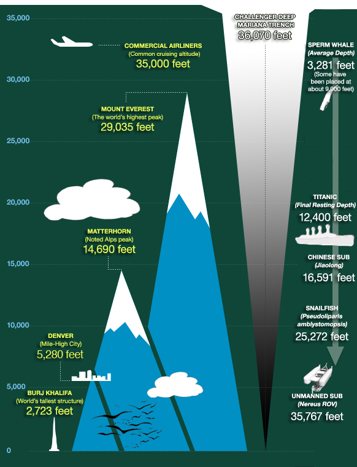
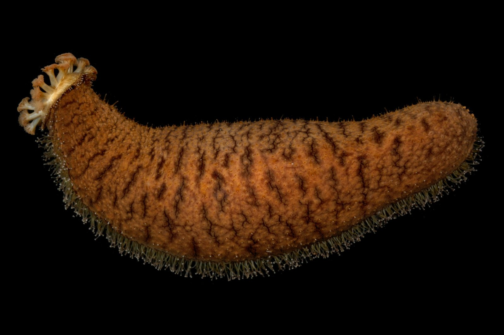
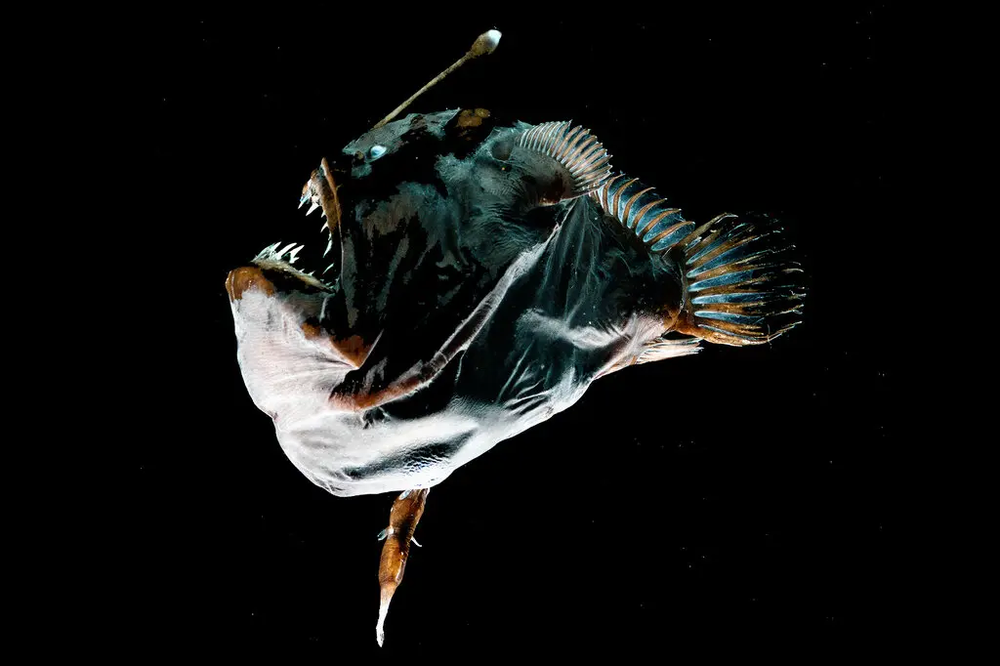
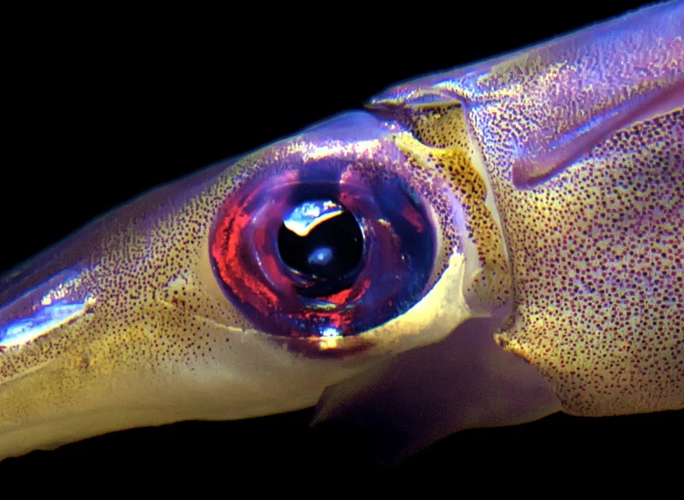

Adaptation and Environment


Sea cucumbers have soft squishy body that compresses under pressure

Anglerfish are bioluminscent to attract prey

Giant squids have big eyes to spot faint light or biolumiscent signals
back to menu
 back to menu
back to menu